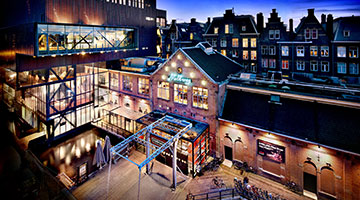
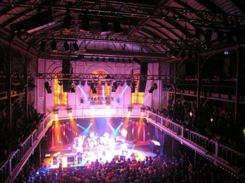
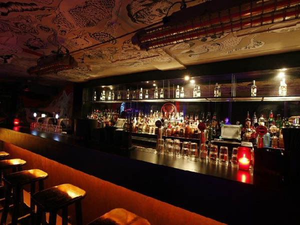

Concerten
Melkweg :
Franz Ferdinand bundelt de krachten met het legendarische rockduo Sparks. Samen zetten zij op donderdag 2 juli 2015 een spetterend.
Paradiso :
Avondvullend eerbetoon aan Bruce Springsteen. 66 wordt hij inmiddels, maar 40 jaar na zijn doorbraakalbum 'Born to Run'
JOHN MAYALL :
North Sea Jazz Club 'Hands that plays the blues'. Levende legende en bluesicoon John Mayall (1933)en daarmee schreef hij geschiedenis
Bitterzoet :
De Amerikaanse singersongwriter Rachael Yamagata begon haar carrière bij de funkgroep Bumpus. In 2011 besloot ze, met zijn succes.
Het Koninklijk :
Concertgebouw Amsterdam Dé superster van de contrabas, Avishai Cohen, heeft gespeeld met Chick Corea, Bobby McFerrin en Alicia Keys. Met zijn fysiek.
 